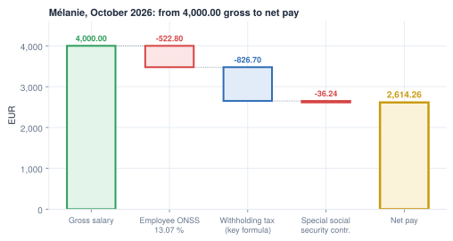

Gross to net
Why three different numbers are all called 'salary'
- Split any payslip into earnings, deductions, employer cost and tax
- Ask the two questions every earning needs: subject to contributions? taxable?
- Value a benefit in kind and treat an allowance that is exempt within limits
- Tell deductions that lower the taxable base from those that do not
- Compute the three bases (gross, contribution base, taxable base) and the employer cost
Mélanie's contract says 4,000.00 €. Social security computes on 4,000.00 €, the withholding tax starts from 3,477.20 €, and her bank receives 2,614.26 €. HR, social security and the tax office all say "salary" and mean different amounts. Confusing them is the most common design bug in payroll software.
What gross and net pay are
Gross pay (gross salary, gross wage) is what the employee earns for the period before anything is taken off: the contract salary plus any other earnings. Net pay (take-home pay) is what reaches the employee's bank account, after the employee's contributions, the withholding tax and any other deductions. The calculation from one to the other is called gross to net, and the payslip is its written record.
Three things follow from that definition:
- Gross is not what the company pays. The employer adds its own contributions on top of the gross. They never touch the net: they are a cost on top of the salary, and the two together are the employer cost.
- The gap between gross and net is the employee's money. The employee contributions and the withholding tax are kept back by the employer and passed on to the authorities: the employer is only a collector.
- "Salary" is ambiguous. Gross, net, and the bases on which contributions and tax are computed are different numbers. This chapter computes each one.
Whatever the country, one month of salary is one pot of money, paid by the employer and split three ways. Illustrative numbers, to scale:
Top bar: the employer cost. Middle bar: the gross splits into the net and the employee's deductions, with the employer contributions beside it. Bottom bar: the authorities receive the tax and both halves of the contributions.
The shape is the same in every country; what changes is the number of recipients and whether the tax segment exists. Hong Kong is the clearest contrast: the employer withholds no income tax. It reports each employee's yearly pay to the tax office, which assesses the tax and collects it from the employee directly (the one exception: an employee leaving Hong Kong for good, whose final payment the employer must hold back). The only mandatory contribution is the pension fund, 5 % from each side. Illustrative numbers again:
Around the world
- Australia: no employee contribution at all; the employer pays superannuation into the employee's pension fund.
- United States, India: several recipients instead of one social security office (federal and state tax; separate pension and health funds).
- United Arab Emirates: no income tax; a pension contribution for nationals only.
Taxable base = Gross − employee contributions + benefits in kind
Net = Gross − employee contributions − withholding tax − other deductions
Benefits in kind are not paid in cash: they only raise the taxable base, and so the tax.
Case study: Mélanie's October

Worked example: Mélanie, October 2026
| Line | Amount (€) |
|---|---|
| SALARY Gross salary | 4,000.00 |
| ONSS Employee social security 13.07 % | −522.80 |
| GROSS Taxable base | 3,477.20 |
| P.P Withholding tax | −826.70 |
| M.ONSS Special social security contribution | −36.24 |
| NET Net pay | 2,614.26 |
The codes are the Belgian salary rules in Odoo. The "special contribution" is a second, smaller employee contribution that does not lower the taxable base (Chapter 3).
Earnings: two questions for each
Every earning on a payslip has to answer two questions, because two different laws look at it: social-security law decides what contributions are taken from, tax law decides what is taxed. They often agree, but not always.
- Does social security take its share? Is it in the contribution base?
- Is it taxed? Is it in the taxable base, and at which rate?
Two yes-or-no answers give four boxes, and every earning falls into one of them:
takes its share
- base salary, overtime, allowances
- bonuses and 13th month, often at a special tax rate
- pay set aside in a US 401(k) retirement plan: social security still applies, income tax is deferred
security
- benefits in kind, valued by a legal formula, where the law exempts them from contributions: a company car in Belgium (other countries also take contributions on them)
- meal vouchers, within the legal limits
- expense reimbursements that repay a real cost
The same earning can sit in a different box in another country, which is why a localization answers both questions for every earning it ships.
Key idea
Design each earning with both answers, stored on the rule. A Belgian company car is taxable but not subject to contributions. An "is it taxable?" flag alone is never enough.
Around the world
- Saudi Arabia, UAE: salary = basic + housing + transport, each fixed on the contract.
- Switzerland: a catalogue of numbered wage types, each a salary rule.
- India: the salary is split into components (basic, house rent, travel…) on the contract.
- Kenya, Philippines, Mexico: some allowances and vouchers are exempt up to a cap; the excess is taxable.
- United States: pre-tax benefits (retirement, medical) lower the taxable base.
Benefits in kind: Marie's company car
A benefit in kind is pay that never touches a bank account. The law values it with a formula, and payroll adds the value to the taxable base. In Belgium, a car's yearly benefit is catalogue value × age coefficient × 6/7 × a CO2 percentage (4 % for an electric car), with a minimum of 1,690.00 € in 2026.4
Worked example: Marie's electric SUV
Catalogue value 52,000.00 €, first registered on 5 January 2026 (age coefficient 100 %), 0 g CO2/km.
| Step | Amount (€) |
|---|---|
| 52,000.00 × 6/7 × 4 % × 100 % | 1,782.86 per year |
| Minimum for 2026 | 1,690.00 per year |
| ATN.CAR Benefit retained, per month | 148.57 |
The benefit goes into Marie's taxable base, not her contribution base; instead the employer pays a monthly CO2 contribution of 42.34 €.5
In Odoo. Odoo spreads the same yearly benefit by days instead of twelfths: 151.42 € in October (31/365), not 148.57 €. The year adds up the same.1
Exempt within limits: meal vouchers
Many countries exempt a benefit only within limits: a cap per day, a minimum employee share, a written policy. Break one condition and the whole amount becomes ordinary pay.
Worked example: Marie's meal vouchers, October 2026
Marie gets one 10.00 € voucher per day worked. October 2026 has 22 working days and she works all of them.
| Line | Amount (€) |
|---|---|
| Vouchers credited: 22 × 10.00 | 220.00 |
| Employer part 22 × 8.91 | 196.02 |
| MEAL_V_EMP Employee part 22 × 1.09, deducted from net | −23.98 |
No voucher is due for a day of sickness or leave, so the count changes every month. The exemption holds only with a written agreement, one voucher per day worked, an employer part of at most 8.91 € and an employee part of at least 1.09 €.3
Deductions, and the order they come in
The second design question is about deductions: does it come before tax or after?
| Kind of deduction | Lowers the taxable base? | Example at MyVidangeCompany |
|---|---|---|
| Compulsory employee contributions | yes, in most countries | employee social security, 13.07 % |
| Pre-tax benefits (pension, medical) | yes, where the law allows | — |
| Other contributions after tax | no | special social security contribution |
| Employee share of a benefit, garnishment | no | meal-voucher employee part |
Order matters because each rule reads totals computed before it: the tax needs the contributions; a garnishment ceiling needs the net.
Common pitfall
Computing withholding on "gross minus all deductions". At MyVidangeCompany the special contribution and the meal-voucher share come after the tax. Tag each deduction with whether it lowers the taxable base.
Three bases, three numbers
Every contribution and every tax is a percentage of something. That something is its base. A payslip has three of them, and they are three different sums of the same lines:
- Gross: what the contract pays. It is the number on the job offer and on the top of the payslip.
- Contribution base: the part of the pay that social security takes its percentage of. Often the gross; sometimes less (capped, or without exempt items).
- Taxable base: the part of the pay the withholding tax is computed on. Usually the gross, minus the employee contributions (most countries do not tax money you never received), plus benefits in kind (pay you received, but not in cash).
The two questions of the previous sections decide, line by line, which base each payslip line enters. Marie's October payslip shows all three cases:
| Payslip line | Amount (€) | Gross | Contribution base | Taxable base |
|---|---|---|---|---|
| Salary | 7,500.00 | ✓ | ✓ | ✓ |
| Company car (benefit in kind, never paid in cash) | 148.57 | – | – | ✓ |
| Employee contributions 13.07 % | −980.25 | – | – | ✓ lowers it |
| The base | 7,500.00 | 7,500.00 | 6,668.32 | |
| What is computed on it | the contract | contributions: 7,500.00 × 13.07 % = 980.25 | withholding tax: 1,770.92 |
Read the last two rows: the contributions are computed first, on the contribution base; only then is the taxable base known, because it needs the contributions. That is why a payslip has an order, and why "the salary" means three different numbers to HR, to social security and to the tax office.
Across the cast:
| Base | Mélanie | Jurgen | Marie |
|---|---|---|---|
| Gross = contribution base | 4,000.00 | 2,300.00 | 7,500.00 |
| Employee contributions after low-wage reduction | 522.80 | 1.08 | 980.25 |
| Benefit in kind (car) | 0.00 | 0.00 | 148.57 |
| Taxable base | 3,477.20 | 2,298.92 | 6,668.32 |
A low-wage reduction cancels nearly all Jurgen's contributions (Chapter 3). Marie's taxable base includes the car; her contribution base does not.
Worked example: Marie, October 2026
| Line | Amount (€) |
|---|---|
| SALARY Gross salary | 7,500.00 |
| ONSS Employee social security 13.07 % | −980.25 |
| ATN.CAR Company car (taxable, not paid) | 148.57 |
| GROSS Taxable base | 6,668.32 |
| P.P Withholding tax (married, spouse without income, 2 children) | −1,770.92 |
| M.ONSS Special social security contribution | −60.94 |
| MEAL_V_EMP Meal vouchers, employee part | −23.98 |
| NET Net pay | 4,663.91 |
The car is in the taxable base but not in the subtraction: it was never paid. (Odoo's net is 4,684.68 €; Chapter 4 explains the gap.)
Employer cost
Gross is not what an employee costs the company.
Mélanie costs 5,004.80 €, Jurgen 2,502.97 € and Marie 9,622.36 €.2 Chapter 3 builds each of these line by line.
How Odoo names the bases
The generic engine has salary-rule categories BASIC, GROSS and NET. A localization adds its own totals and may give the generic codes a local meaning: Belgium adds ONSS_BASE and WITHHOLDING_BASE, and uses GROSS for the taxable salary.
| Concept | Belgian rule code | Name in Odoo | Mélanie |
|---|---|---|---|
| Gross before contributions | SALARY |
Gross Salary | 4,000.00 |
| Employee social security | ONSS |
Social contribution | −522.80 |
| Taxable base | GROSS |
Taxable Salary | 3,477.20 |
| Net pay | NET |
Net Salary | 2,614.26 |
In Odoo. A salary rule can belong to several categories (category_ids on hr.salary.rule), so one line can feed both bases: the "two questions" become data. The car is a rule ATN.CAR that feeds the withholding base, followed by ATN_DED that takes the same amount out of the net.
Common pitfall
Assuming GROSS means the same in every localization. In l10n_be_hr_payroll it is the taxable salary, so a cross-country "gross salaries" report on GROSS is wrong by 13.07 % for Belgium.
In practice
When an accountant says "salary", ask which one: gross, contribution base or taxable. Put the answer in the category or rule name.
Summary
- Every payslip has earnings, employee deductions, tax, net and employer cost.
- Each earning needs two answers: is it subject to contributions, and is it taxable? They are independent.
- Benefits in kind raise the taxable base but are never paid: Marie's car adds 148.57 € to her taxable base and nothing to her net.
- Some benefits are exempt only within limits. Only some deductions come before tax; tag each one.
- Gross, contribution base and taxable base are three numbers: for Mélanie 4,000.00 €, 4,000.00 € and 3,477.20 €.
- Employer cost = gross + employer contributions − reductions + employer benefits: 5,004.80 € for Mélanie, 9,622.36 € for Marie.
- Localizations name their bases differently: in Belgium,
GROSSis the taxable salary.
-
Payslips computed by Odoo master on the demo database,
research/numbers_be.md(Marie, February 2026, and the October 2026 summary). ↩ -
Independent calculator,
research/numbers_be_calc.md, sections 2 and 10.3. ↩ -
ONSS, meal vouchers, conditions (employer part 8.91 € from 1 January 2026): https://www.socialsecurity.be/employer/instructions/dmfa/fr/latest/instructions/salary/particularcases/lunchcheques/salaryfeatures.html. ↩
-
SPF Finances, FAQ company cars 2026 (formula, reference emissions, minimum 1,690 €): https://finances.belgium.be/sites/default/files/downloads/121-faq-voitures-de-societe-2026.pdf. ↩
-
ONSS, solidarity contribution on company cars: https://www.socialsecurity.be/employer/instructions/dmfa/fr/latest/instructions/special_contributions/companycar.html. ↩